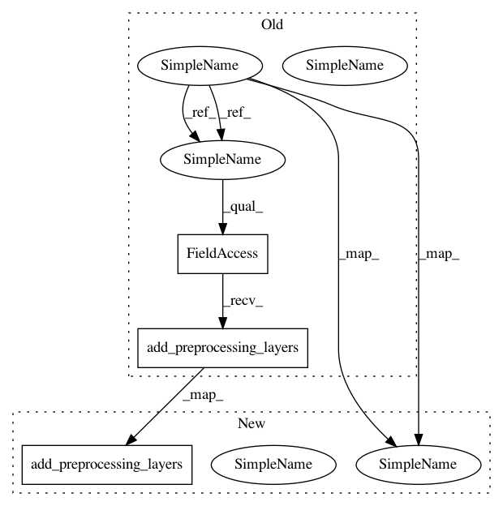

01f1bcb376dfd967603c785a255f927dea2712b6,demos/BRATS17/brats_segmentation.py,BRATSApp,initialise_dataset_loader,#BRATSApp#,44
Before Change
self.initialise_grid_aggregator)
}
def initialise_dataset_loader(self, data_param=None, task_param=None):
self.data_param = data_param
self.segmentation_param = task_param
// read each line of csv files into an instance of Subject
if self.is_training:
self.reader = ImageReader(SUPPORTED_INPUT)
else: // in the inference process use image input only
self.reader = ImageReader(["image"])
self.reader.initialise(data_param, task_param)
if self.net_param.normalise_foreground_only:
foreground_masking_layer = BinaryMaskingLayer(
type_str=self.net_param.foreground_type,
multimod_fusion=self.net_param.multimod_foreground_type,
threshold=0.0)
else:
foreground_masking_layer = None
mean_var_normaliser = MeanVarNormalisationLayer(
image_name="image", binary_masking_func=foreground_masking_layer)
label_normaliser = DiscreteLabelNormalisationLayer(
image_name="label",
modalities=vars(task_param).get("label"),
model_filename=self.net_param.histogram_ref_file)
normalisation_layers = []
normalisation_layers.append(mean_var_normaliser)
if task_param.label_normalisation:
normalisation_layers.append(label_normaliser)
volume_padding_layer = []
if self.net_param.volume_padding_size:
volume_padding_layer.append(PadLayer(
image_name=SUPPORTED_INPUT,
border=self.net_param.volume_padding_size))
self.reader.add_preprocessing_layers(
normalisation_layers + volume_padding_layer)
def initialise_uniform_sampler(self):
self.sampler = [UniformSampler(
After Change
self.segmentation_param = None
def initialise_dataset_loader(
self, data_param=None, task_param=None, data_partitioner=None):
self.data_param = data_param
self.segmentation_param = task_param
// read each line of csv files into an instance of Subject
if self.is_training:
file_lists = []
if self.action_param.validation_every_n > 0:
file_lists.append(data_partitioner.train_files)
file_lists.append(data_partitioner.validation_files)
else:
file_lists.append(data_partitioner.all_files)
self.readers = []
for file_list in file_lists:
reader = ImageReader(SUPPORTED_INPUT)
reader.initialise(data_param, task_param, file_list)
self.readers.append(reader)
else: // in the inference process use image input only
inference_reader = ImageReader(["image"])
file_list = data_partitioner.inference_files
inference_reader.initialise(data_param, task_param, file_list)
self.readers = [inference_reader]
foreground_masking_layer = None
if self.net_param.normalise_foreground_only:
foreground_masking_layer = BinaryMaskingLayer(
type_str=self.net_param.foreground_type,
multimod_fusion=self.net_param.multimod_foreground_type,
threshold=0.0)
mean_var_normaliser = MeanVarNormalisationLayer(
image_name="image", binary_masking_func=foreground_masking_layer)
label_normaliser = DiscreteLabelNormalisationLayer(
image_name="label",
modalities=vars(task_param).get("label"),
model_filename=self.net_param.histogram_ref_file)
normalisation_layers = []
normalisation_layers.append(mean_var_normaliser)
if task_param.label_normalisation:
normalisation_layers.append(label_normaliser)
volume_padding_layer = []
if self.net_param.volume_padding_size:
volume_padding_layer.append(PadLayer(
image_name=SUPPORTED_INPUT,
border=self.net_param.volume_padding_size))
for reader in self.readers:
reader.add_preprocessing_layers(
normalisation_layers + volume_padding_layer)
def initialise_sampler(self):
if self.is_training:
In pattern: SUPERPATTERN
Frequency: 3
Non-data size: 3
Instances
Project Name: NifTK/NiftyNet
Commit Name: 01f1bcb376dfd967603c785a255f927dea2712b6
Time: 2017-11-15
Author: wenqi.li@ucl.ac.uk
File Name: demos/BRATS17/brats_segmentation.py
Class Name: BRATSApp
Method Name: initialise_dataset_loader
Project Name: NifTK/NiftyNet
Commit Name: 53633acd7c861fd73e3954088a48d0ac8dc42895
Time: 2017-11-01
Author: eli.gibson@gmail.com
File Name: niftynet/application/regression_application.py
Class Name: RegressionApplication
Method Name: initialise_dataset_loader
Project Name: NifTK/NiftyNet
Commit Name: 09f72ac06873b4069b8fddad769be3f1148a5791
Time: 2017-08-10
Author: wenqi.li@ucl.ac.uk
File Name: niftynet/application/segmentation_application.py
Class Name: SegmentationApplication
Method Name: initialise_dataset_loader